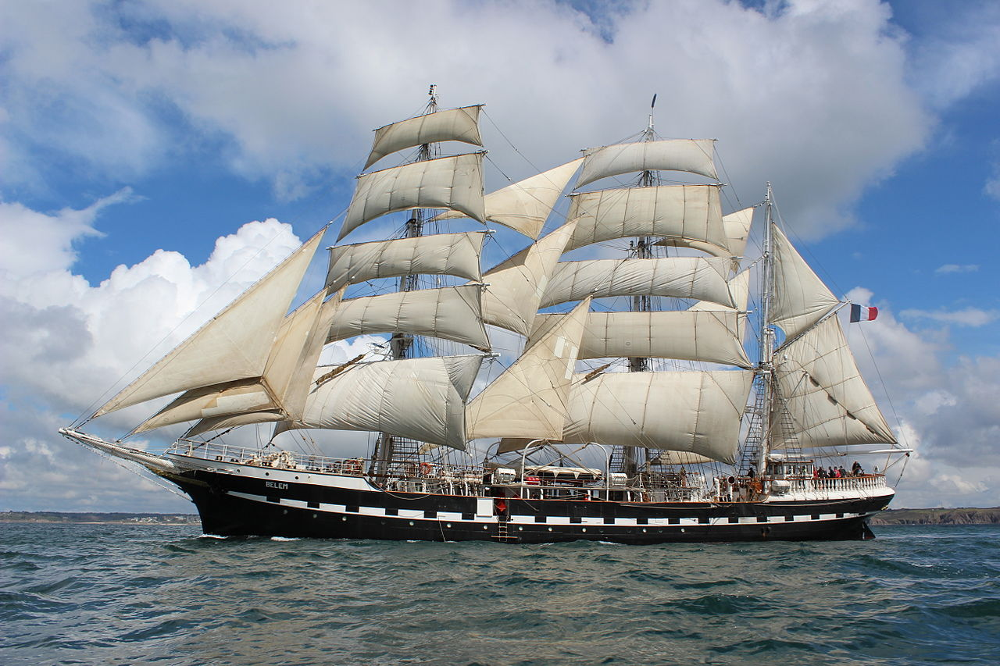

Ce projet a pour objectif d'analyser les données AIS et de modéliser les comportements de navigation des navires. Cette interface web permet donc de rendre accessible notre modèle d’intelligence artificielle, en permettant à l’utilisateur de saisir les caractéristiques d’un navire afin d’en prédire le type et visualiser la trajectoire sur une carte interactive.
